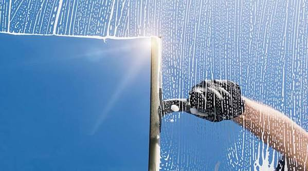
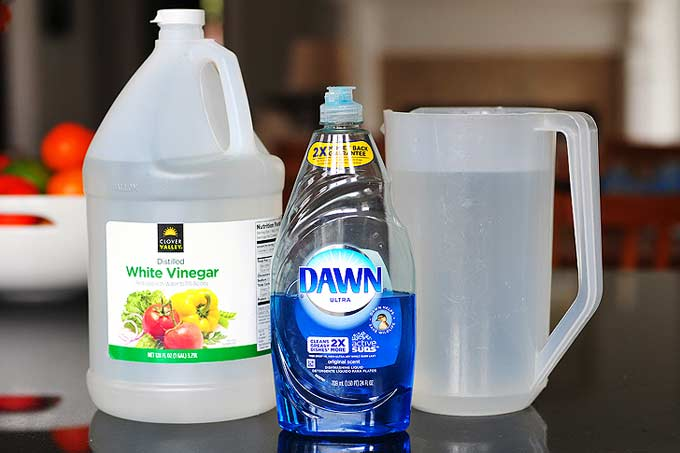
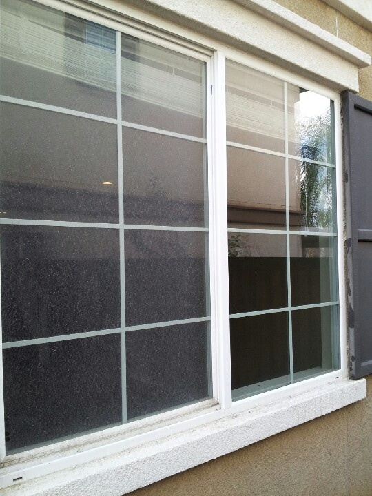

Let the sunshine in with professional window cleaning services that leave your home or business looking its best. We take the hassle out of keeping your windows spotless, removing dirt, dust, hard water stains, and buildup to restore their natural
shine.
Whether you need a one-time cleaning or regular maintenance, our team delivers reliable service, attention to detail, and streak-free results. Enjoy brighter spaces, clearer views, and the difference professionally cleaned windows can make.